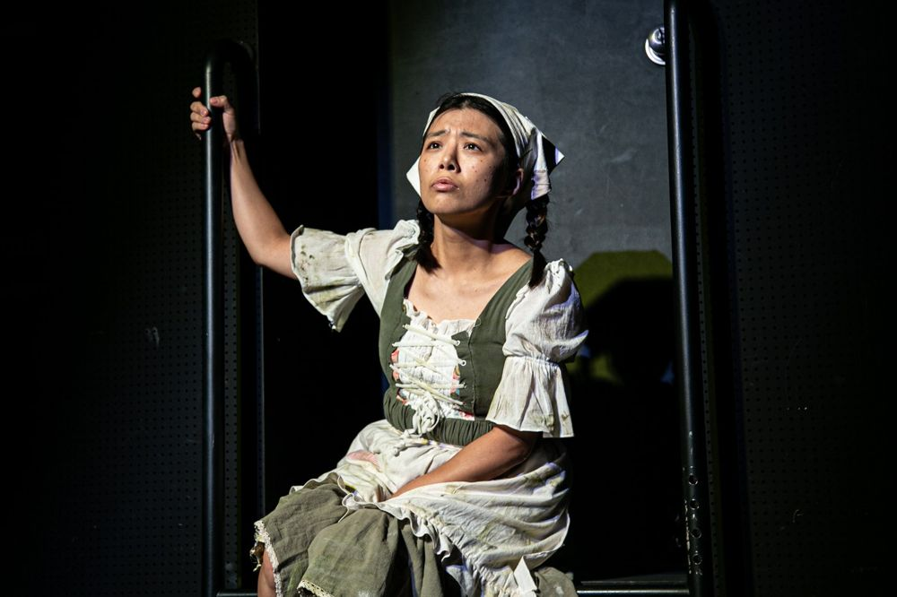

Green Pig > Archive > Home Sweet Home 2: Abandoned Children

Gretel, abandoned by her parents and waiting alone in the forest for her brother; the Ugly Duckling, driven out of the community and wandering; Pinocchio, setting off to find Geppetto. The three discover that they share being abandoned and unwelcome, and as they try to carry on the story as the author wrote it, they meet a mysterious figure. Through abandoned children spreading learned hatred to others and the process of overcoming it, the piece turns over the world of fairy tales we have taken for granted.
2022.9.16–25 / Samilro Warehouse Theater
Writer: Lim Jeonghui
Director: Park Hyunji
Cast: Na Yujin, Lee Yeojin, Lim Jeonghui, Hwang Jaehui
Lighting: Kim Sohyeon
Costumes: Shin Eunhye
Video: Lim Riwon
Music: Park Goeun
Operator: Jung Yujin
Coordination: Lee Minjeong, Jeon Sunghyun, Choi Jihyeon, Hwang Miyeong
Publicity and marketing: Lee Hoyeon
Lettering: Kim Yeongseon
Graphics: Lim Rip
Presented by: Project Sesi, Green Pig
Previous: The Who & The What | Next: Ill-fated: A Twentieth Birthday Wish
Back to the archive | Any work
Published 2026.11.13